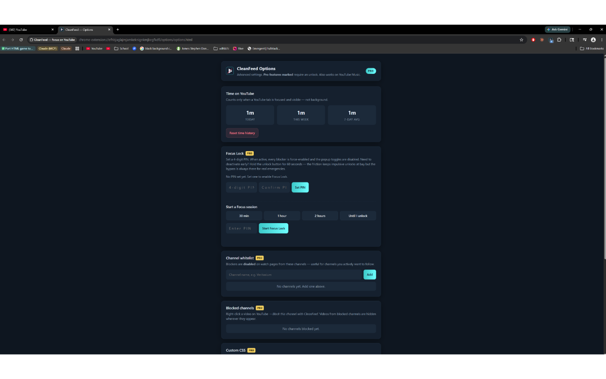

You finish a video, scroll down out of habit, and twenty minutes later you're deep in an argument between strangers about something you didn't even care about. The YouTube comment section is a distraction engine in its own right — sometimes funny, occasionally useful, frequently a sinkhole of outrage and spam. If you'd rather just watch and leave, hiding comments is a reasonable choice. The catch most guides won't tell you up front: YouTube has no native "hide all comments" switch on desktop. There is no setting in your account that removes the section everywhere. What you can do is a mix of small manual tricks and, if you want it gone for good, a browser extension. This guide covers both honestly, so you don't waste time hunting for a toggle that doesn't exist.
First, the honest truth about YouTube's own settings
Let's clear up the confusion first, because it's the most common reason people get frustrated. On the desktop site there is no first-party option that hides comments across every video you watch. The controls YouTube gives you split into two very different roles:
- If you're a creator, you can disable or limit comments on your own uploads — per video or as a channel default — in YouTube Studio. That stops people commenting on your content. It does nothing about the comments you see on everyone else's videos.
- If you're a viewer, YouTube offers no setting to suppress the comment section on the videos you watch. You can collapse it, scroll past it, or install something that removes it. That's the whole menu.
So when an article promises a hidden "turn off comments" preference, treat it as a red flag. The realistic options are the manual ones below and the extension ones after them.

Part 1 — Manual methods (no extension required)
None of these makes comments vanish forever, but several are good enough if your goal is just "stop pulling me in right now." They're free and take seconds.
-
1. Collapse the comment section instead of scrolling into it
On desktop the comments sit directly under the video, below the description. The easiest thing you can do is simply not expand them — but YouTube also gives you a small lever to tidy the area.
- Scroll to where the comments begin, just under the video info and description box.
- If you've opened the description, click Show less to collapse it, which keeps the comments lower and out of immediate view.
- Resist the scroll. The comment count and top comment preview are designed to bait the first click — once you know that, ignoring them is easier.
The honest limitation: this is a behavioral fix, not a real hide. The section is still there the moment you scroll, and YouTube doesn't remember any collapsed state between videos.
-
2. Use theater or fullscreen mode to push comments off-screen
Switching the player to Theater mode (the rectangular icon, or press t) enlarges the video so comments drop well below the fold. Fullscreen (f) removes the page entirely while you watch. Neither deletes the comments, but both keep them out of sight during playback. When the video ends you're back to the normal layout — so pair this with closing the tab when you're done rather than scrolling down.
-
3. Understand the mobile app's behavior
The mobile app handles comments differently from desktop. On phones, comments are tucked behind a collapsed preview bar beneath the video — you tap it to open the full thread in a sheet. That's slightly better than desktop by default, since the section starts closed rather than laid out in front of you. But there's still no setting in the mobile app to hide comments permanently, and mobile browsers can't run the desktop extensions below. If most of your YouTube time is on a phone, your realistic options are self-discipline and simply not tapping that preview bar.
-
4. Lean on videos where comments are already turned off
Plenty of videos have comments disabled by their creator — common on content marked as "made for kids," on some news and music uploads, and anywhere a channel has switched them off. On those pages you'll see a short "Comments are turned off" notice instead of the section, with nothing to scroll into. You can't force this on other people's videos, but it's a reminder that the comment section is optional from YouTube's side — the platform just doesn't expose that choice to viewers. If you're a creator yourself, you can disable comments on your own uploads in YouTube Studio, per video or as a channel default.
-
5. Hide comments yourself with custom CSS (userstyle)
If you're comfortable with a little tinkering, you can hide the comment section across every video with one small CSS rule, applied through a userstyle manager like Stylus. The comments live in a container you can target and collapse:
/* Hide the YouTube comment section on watch pages */ ytd-comments#comments { display: none !important; }This removes the entire section while leaving the video, description, and recommendations untouched. Honest caveat: YouTube renames its internal elements every few months, so a rule that works today can quietly break after an update and need re-tweaking — exactly the chore the extensions below handle for you.
Part 2 — Extension methods (set it and forget it)
If you want comments gone reliably and permanently, without babysitting a CSS rule, a browser extension is the real answer. Here are four worth knowing, described honestly. We make CleanFeed, but it isn't the only good option, and for a lot of people it isn't the right one — especially if a free toggle is all you're after.
-
1. Unhook — the gold-standard free pick
Free · 800k+ users · open source. If all you want is comments hidden and nothing else, install Unhook and you're done. It has a dedicated "Hide Comments" toggle alongside dozens of other granular switches — homepage feed, sidebar recommendations, Shorts, end cards and more. It's free, hugely popular, well maintained, and has an optional Pro tier for extras most people never need. For a plain "make the comment section disappear" job, this is the first thing we'd recommend. Its only real gap is commitment: every toggle flips back on the instant you feel the itch to peek, so it leans on your own self-control to stay off.
-
2. CleanFeed — when you want comments to stay hidden
$4.99 one-time · free 2-blocker tier · open source. CleanFeed hides the comment section just as cleanly as Unhook, as one of 17 individual blockers covering Shorts, the homepage feed, sidebar recs, autoplay, end-screen suggestions and more. The reason it exists is the part willpower-based tools skip: Focus Lock. Set a 4-digit PIN, lock your blockers on, and you can't impulsively re-enable comments mid-session — turning a blocker off requires holding a button for a full 60 seconds, long enough for the impulse to pass. There's also a Pomodoro timer (25/5 cycles) that auto-locks every blocker during focus, a time tracker that only counts visible YouTube tabs, and — the standout for comments specifically — per-page rules. You can set comments to hide on most videos but show on the channels where you genuinely want them, with an On/Off/Inherit choice per blocker per page. The free tier gives you any 2 blockers forever; $4.99 unlocks everything once, with no subscription, no account, and no telemetry. If your problem is discipline rather than clutter, this is the wedge.
-
3. DF Tube (Distraction Free for YouTube) — lightweight and simple
Free + paid tiers. DF Tube is the minimalist choice. It hides comments, the sidebar, the feed and other distractions through a small set of toggles, and it's noticeably simpler than Unhook. There's no lock or commitment mode, so like Unhook it runs on the honor system, but if Unhook's settings panel feels like too much, DF Tube gets you a comment-free watch page with almost no configuration.
-
4. BlockTube — filtering by channel and keyword
Free. BlockTube blocks content by who and what using filter lists and regex. It's not primarily a comment-hider, but it's the right tool if your real issue is specific channels or topics rather than the comment box itself. Reach for it when surgical, rule-based blocking is what you actually want.

Which method should you use?
Be honest about why the comments get you. If you only occasionally drift into them, the manual route — theater mode while watching, then closing the tab instead of scrolling — costs nothing and is often enough. If you want them gone on every video without maintenance, install Unhook (free) and flip "Hide Comments." If the real problem is that you keep re-enabling the section the moment you're bored, an honor-system extension won't save you — that's the gap CleanFeed's Focus Lock closes. And if you want comments hidden almost everywhere but kept on a few channels you trust, CleanFeed's per-page rules let you have it both ways. There's no single right answer, only the one that matches your failure mode.
A realistic combined setup
For most people the most durable result comes from stacking a couple of these. Install one extension to hide the comment section by default, then use per-page rules (or a quick toggle) for the handful of cases where comments are genuinely useful — a tutorial with a pinned correction, or a creator whose community you like. On the phone, where extensions can't run, lean on the app's collapsed-by-default behavior. Add Focus Lock only if a plain toggle hasn't kept you out.
Frequently asked questions
Can I hide YouTube comments without an extension?
Partly. You can keep comments out of view with theater or fullscreen mode, by not scrolling into the section, and by writing a small custom CSS rule. But there's no built-in YouTube setting that hides comments on the videos you watch, so the only truly hands-off, permanent option is an extension. The manual tricks reduce exposure; they don't remove the section.
Does hiding comments log me out or break anything?
No. Hiding the comment section with any extension or CSS rule leaves you fully signed in. Your subscriptions, playlists, history, likes and the ability to comment yourself all keep working — you're only hiding one section of one page. If you ever want to read or post a comment, you toggle the blocker off and the section returns instantly.
Will hidden comments come back after a YouTube update?
With manual CSS, sometimes — YouTube periodically renames its internal elements, which can break a hand-written selector until you update it. Maintained extensions like Unhook, CleanFeed, DF Tube and BlockTube are updated by their developers to keep pace with those changes, so comments stay hidden across updates. If the section ever reappears after an extension update, checking the extension's settings or installing a pending update usually fixes it.
Can I hide comments on some videos but keep them on others?
Yes, and this is where an extension pulls ahead of a blanket CSS rule. CleanFeed's per-page rules let you hide comments by default but show them on specific channels, with an On/Off/Inherit choice per blocker. Unhook and DF Tube use a single global toggle you flip manually, which works too — it's just less granular.
Is hiding comments against YouTube's rules?
No. Userstyles and the extensions here only change how the page is displayed in your own browser — they don't alter YouTube's servers, scrape data, or bypass ads. You're customizing your own view, which is entirely your call.
Is the free option enough, or do I need to pay?
For hiding comments specifically, free is genuinely enough — Unhook does it cleanly at no cost, and the manual tricks cost nothing. You'd only pay for CleanFeed's $4.99 lifetime unlock if you want the extras: Focus Lock, per-page rules, a Pomodoro timer, and a focused-time tracker. Start free; upgrade only if a simple toggle isn't keeping you honest.